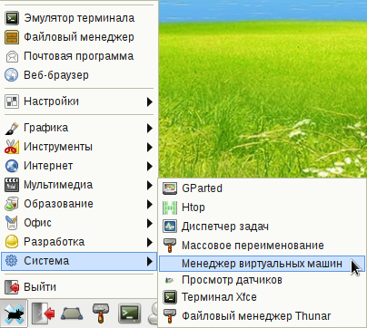
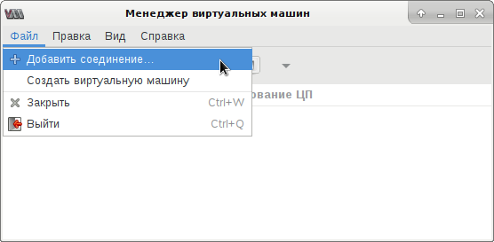
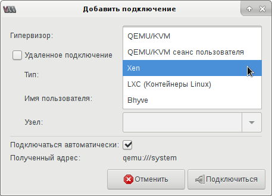
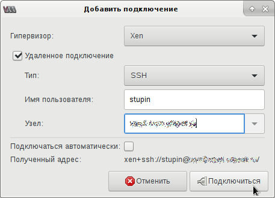
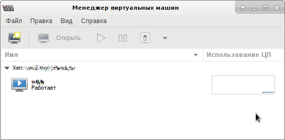
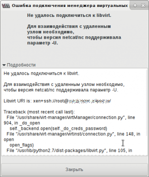
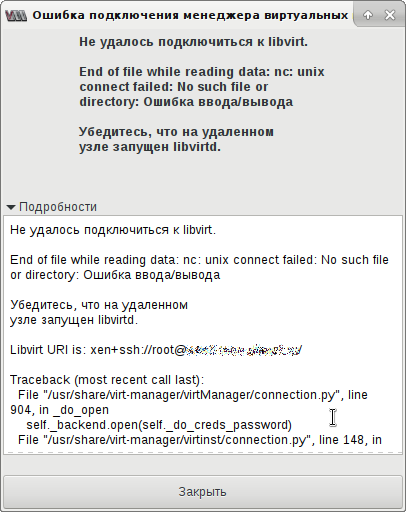
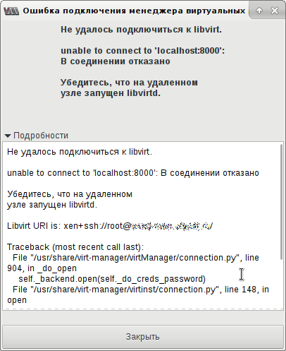
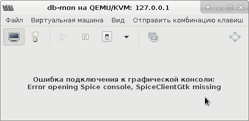

Для управления виртуальными машинам, работающими под управлением систем виртуализации KVM и Xen можно использовать программу с графическим интерфейсом, которая называется Virt-manager. Программа использует демон libvirt, установленный на компьютере с системой виртуализации. Для подключения Virt-manager к демону libvirt можно использовать SSH, что довольно удобно и безопасно. Как правило, демон SSH бывает уже установлен на компьютерах, доступных по сети, поэтому не нужно заботиться о настройке отдельного сетевого демона. Плюс к тому, SSH поддерживает аутентификацию пользователей и надёжное шифрование передаваемых данных.
Проверим наличие аппаратной поддержки виртуализации:
$ egrep -c '(vmx|svm)' /proc/cpuinfo
Устанавливаем систему виртуализации qemu с поддержкой KVM и демон libvirt для управления виртуальными машинами, работающими под управлением KVM:
# apt-get install qemu-kvm libvirt-daemon-system
Добавляем пользователя, от имени которого будем заходить на сервер по SSH, в группу libvirt, чтобы он имел доступ к управлению виртуальными машинами:
# usermod -aG libvirt stupin
Пользователь получит доступ к Unix-сокету /var/run/libvirt/libvirt-sock
Установим netcat из OpenBSD, поддерживающий опцию -U для подключения к Unix-сокету. Это нужно для перенаправления подключения от SSH-клиента в Unix-сокет libvirt:
# apt-get install netcat-openbsd
Осталось включить и запустить демона:
# systemctl enable libvirtd # systemctl start libvirtd
В моём случае Xen был развёрнут в операционной системе Debian Wheezy, где пакет с демоном libvirt называется libvirt-bin. Установим его:
# apt-get install libvirt-bin
Теперь, чтобы пользователь, от имени которого мы будем подключаться по SSH к серверу виртуализации, смог подключиться к демону libvirtd, нужно добавить его в группу libvirt:
# usermod -aG libvirt stupin
Пользователь получит доступ к Unix-сокету /var/run/libvirt/libvirt-sock
Для того, чтобы демон libvirt смог работать с системой виртуализации Xen, нужно включить HTTP-сервер, встроенный в xend. Демон libvirt будет выполнять роль посредника, транслируя входящие запросы в запросы к xend.
Настроим HTTP-сервер, ожидающий подключений на порту 8000 и адресе 127.0.0.1. Для этого нужно прописать в файл /etc/xen/xend-config.sxp следующие опции:
(xend-http-server yes) (xend-address localhost) (xend-port 8000)
Чтобы настройки xend вступили в силу, нужно перезапустить его (пример для Debian Wheezy):
# /etc/init.d/xen restart
Будьте осторожны - в конфигурации по умолчанию при перезапуске демона xend перезапускаются также и все виртуальные машины. Чтобы избежать этого, нужно при создании виртуальной машины прописать в её конфигурацию такие настройки:
on_xend_start = 'ignore' on_xend_stop = 'ignore'
У меня эти настройки были прописаны в каждой виртуальной машине, поэтому я перезапускал xend без опасений.
Устанавливаем на компьютере администратора пакет с GUI-интерфейсом для управления виртуальными машинами:
# apt-get install virt-manager
Теперь можно попробовать сделать то, ради чего всё и затевалось: подключиться к системе виртуализации из программы virt-manager. Ниже приведены снимки экрана, иллюстрирующие этот процесс.
Запуск virt-manager:
Добавление нового подключения:
Новое подключение к системе виртуализации Xen:
Настройки удалённого подключения к системе виртуализации Xen через SSH:
Подключение к системе виртуализации установлено, виден список виртуальных машин:
Теперь можно подключаться к консоли виртуальной машины и менять её настройки.
Не удалось подключиться к libvirt.
Для взаимодействия с удалённым узлом необходимо, чтобы версия netcat/nc поддерживала параметр -U.
Не удалось подключиться к libvirt.
End of file while reading data: nc: unix connect failed: No such file or directory: Ошибка ввода/вывода
Убедитесь, что на удалённом узле запущен libvirtd.
Не удалось подключиться к libvirt.
unable to connect to 'localhost:8000': В соединении отказано
Убедитесь, что на удалённом узле запущен libvirtd.
Ошибка подключения к графической консоли:
Error opening Spice console, SpiceClientGtk missing